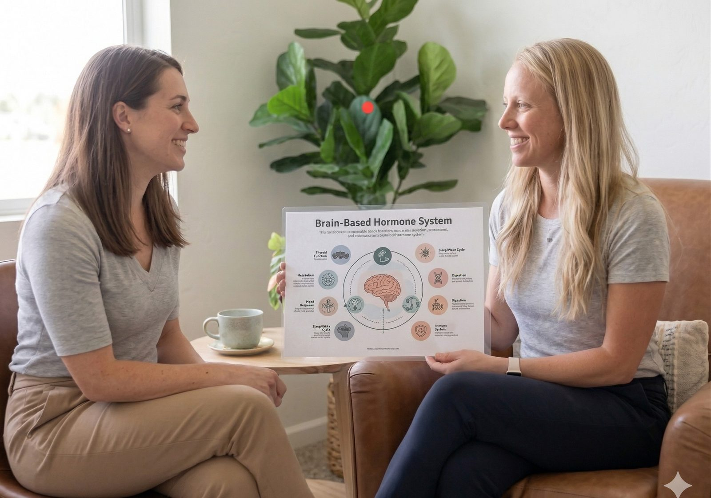

EMDR is Sara's primary therapeutic modality — paired with precision medication management. One provider for therapy and prescribing, for adults and children alike. No coordination gaps. No cookie-cutter protocols.

You've been handed an SSRI and told to come back in a month. But nobody asked about your sleep, your gut, your hormones, or what's actually driving the anxiety. Sara investigates the full picture — mind, body, and nervous system — before reaching for a prescription pad.
Whether it's medication management alone, therapy alone, or both together — you'll have one provider who knows your full story.
When your kid is struggling with anxiety, ADHD, depression, or behavioral challenges — and traditional providers aren't getting to the root — you need someone with the time, training, and patience to truly understand.
Sara spent 8 years in the pediatric ICU at Primary Children's. She knows children, caregivers, and what it takes to build trust when everything feels hard.
Private pay. Superbills provided for out-of-network reimbursement.